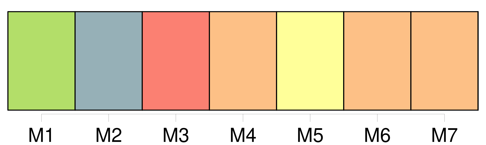
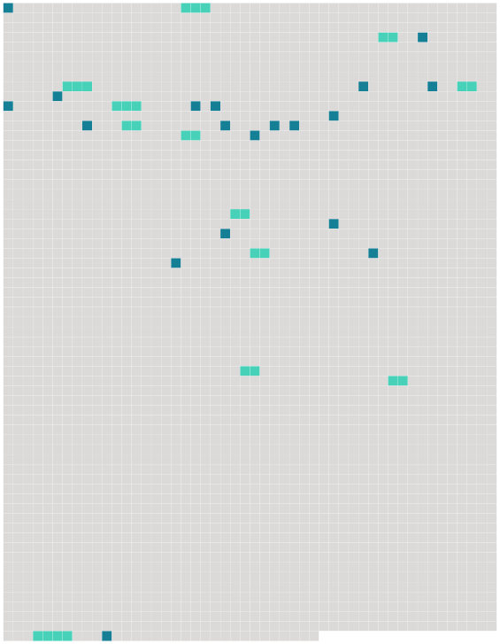

Longueur nb maillons : 31 mentions |
 |
[Qui] pouvait à cette heure venir troubler la solitude du manoir et le silence de la nuit?? [Quel voyageur malavisé] heurtait à cette porte qui ne s'était pas ouverte depuis si longtemps pour un hôte, non par manque de courtoisie de la part du maître, mais par l'absence de visiteurs?? [3 phrases] Il abaissa la barre de la porte, entr'ouvrit le battant mobile, et se trouva en face d' [un personnage] au nez [duquel] il porta sa lampe. [5 phrases]
Les saluts accomplis, [le burlesque personnage] , prévenant sur les lèvres du Baron la question qui allait en jaillir, prit la parole d'un ton légèrement emphatique et déclamatoire : [1 phrases] — Que voulez [-vous] ??
interrompit assez sèchement le Baron ennuyé par le verbiage [du vieux drôle]
— L'hospitalité pour [moi] et [mes] camarades, des princes et des princesses, des Léandres et des Isabelles, des docteurs et des capitaines qui se promènent de bourgs en villes sur le chariot de Thespis, lequel chariot, traîné par des bœufs à la manière antique, est maintenant embourbé à quelques pas de votre château.
— Si je comprends bien ce que [vous] dites, vous êtes des comédiens de province en tournée et vous avez dévié du droit chemin? — On ne saurait mieux élucider [mes] paroles, répondit [l'acteur] , et vous parlez de cire.
Puis [-je] espérer que Votre Seigneurie [m'] accorde [ma] requête? [1 phrases]
» [11 phrases] — Qu'à cela ne tienne, répliqua [le Pédant] ; si, au théâtre, l'on nous sert des poulets de carton et des bouteilles de bois tourné, nous nous précautionnons, pour la vie ordinaire, de mets plus substantiels.
Ces viandes creuses et ces boissons imaginaires iraient mal à nos estomacs, et, en qualité de munitionnaire de la troupe, [je] tiens toujours en réserve quelque jambon de Bayonne, quelque pâté de venaison, quelque longe de veau de Rivière, avec une douzaine de flacons de vin de Cahors et de Bordeaux. — Bien parlé, [Pédant] , exclama le Léandre ; va chercher les provisions, et, si ce seigneur le permet et daigne souper avec nous, dressons ici même la table du festin. [2 phrases] [Le Pédant] reparut bientôt portant un panier de chaque main, et [plaça] triomphalement au milieu de la table une forteresse de pâté aux murailles blondes et dorées, qui renfermait dans ses flancs une garnison de becfigues et de perdreaux. [Il] entoura ce fort gastronomique de six bouteilles, pour ouvrages avancés, qu'il fallait emporter avant de prendre la place. [15 phrases] Isabelle prit place à gauche, la soubrette se mit en face, la duègne s'établit à côté [du Pédant] , Léandre et le Matamore s'assirent où ils voulurent. [1 phrases]
Son examen porta d'abord sur les femmes, dont il ne serait pas hors de propos de tirer ici un léger crayon, tandis que [le Pédant] pratique une brèche aux remparts du pâté. [32 phrases] Le personnel mâle se composait [du Pédant déjà décrit] , et sur [lequel] il n'est pas nécessaire de revenir, du Léandre, du Scapin, du Tyran tragique et du Tranche-montagne. |
 |
Il est possible de télécharger la ressource sur la page Ortolang |
Si vous avez des questions ou vous voyez des erreurs, merci d'envoyer un mail à silvia.federzoni89@gmail.com |